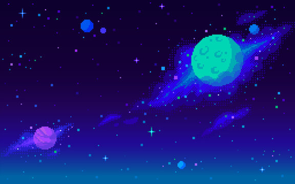
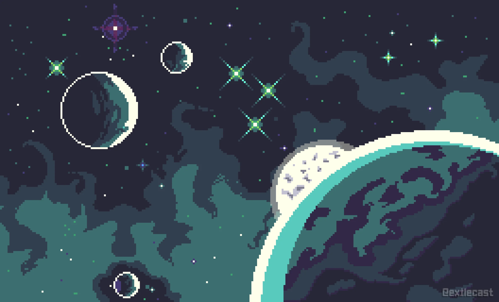
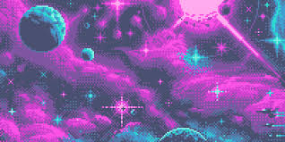
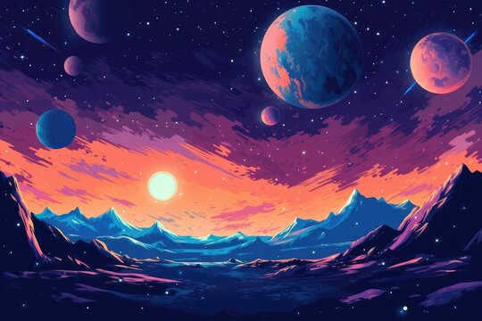
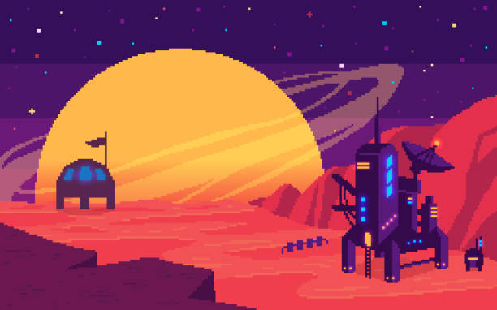
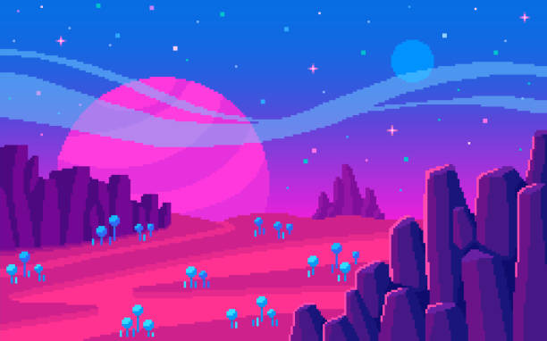
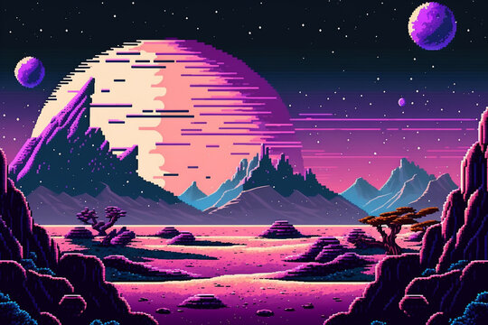
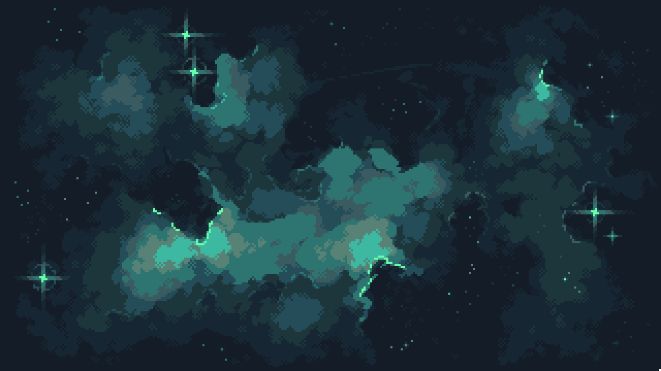

Welcome to my
Blog!
Blog Posts
Galactic Collisions
When two galaxies collide, their immense gravitational interactions create spectacular cosmic
events. Star formation accelerates as gas clouds compress, leading to brilliant bursts of light.
Over millions of years, these mergers can reshape entire galaxies, sometimes forming elliptical
structures or fueling the growth of supermassive black holes at their centers. Observing galactic
collisions provides insights into the past and future evolution of the universe.

Black Hole Mysteries
Black holes continue to fascinate astronomers with their immense gravitational pull, capable of
trapping even light. The event horizon marks the boundary beyond which nothing can escape, making
black holes incredibly difficult to observe directly. Recent discoveries, including the imaging of
the M87 black hole, provide valuable insights into their structure. Theories surrounding black holes
also explore their possible connections to wormholes and alternate dimensions, pushing the
boundaries of modern physics.

Life on Exoplanets
The discovery of thousands of exoplanets has sparked excitement in the search for extraterrestrial
life. Scientists analyze planetary atmospheres for biosignatures such as oxygen, methane, and water
vapor. Some exoplanets, located in the habitable zones of their stars, may have conditions suitable
for life. Advanced telescopes like the James Webb Space Telescope will further refine our
understanding of these distant worlds, bringing us closer to answering the age-old question: Are we
alone in the universe?

Nebulae Wonders
Nebulae are vast interstellar clouds of gas and dust that serve as birthplaces for new stars. The
iconic Orion Nebula, for example, glows with brilliant colors as young stars illuminate surrounding
gas. Some nebulae form from supernova remnants, showcasing the cycle of stellar life and death.
Studying these formations helps scientists understand the processes that govern star formation and
galaxy evolution, unlocking the secrets of the cosmos.

Dark Matter Puzzle
Dark matter, an invisible and mysterious substance, makes up most of the universe's mass. Although
it does not emit, absorb, or reflect light, its gravitational effects are observed in galaxy
rotation and cosmic structures. Scientists employ techniques such as gravitational lensing to detect
its presence, but its true nature remains unknown. Unlocking the dark matter puzzle is one of the
biggest challenges in modern astrophysics and could revolutionize our understanding of the universe.

The Big Bang
The universe originated from the Big Bang, a colossal explosion nearly 13.8 billion years ago. This
event set space, time, and matter into motion, forming the cosmic structures we observe today. The
cosmic microwave background radiation serves as a remnant of this event, providing crucial evidence
for the theory. Scientists continue to explore what happened in the first moments after the Big
Bang, delving into the fundamental forces that shaped existence itself.

Interstellar Travel
The concept of interstellar travel has long been a fascination in science fiction, but advancing
technologies are bringing it closer to reality. Potential propulsion systems, such as light sails,
nuclear fusion engines, and antimatter propulsion, are being researched to make journeys beyond our
solar system feasible. Although current spacecraft would take thousands of years to reach the
nearest star, breakthroughs in physics may one day enable humanity to explore new worlds beyond our
cosmic neighborhood.

Wormhole Theories
Wormholes, hypothesized bridges through space-time, could theoretically allow instant travel between
distant points in the universe. While no evidence of natural wormholes exists, mathematical models
based on Einstein’s general relativity suggest their possibility. Scientists debate whether they
could be stable or traversable, with some proposing exotic matter as a potential stabilizer. If
proven feasible, wormholes could revolutionize space exploration and even time travel theories.

Gravitational Waves
The groundbreaking detection of gravitational waves in 2015 confirmed a key prediction of Einstein’s
theory of relativity. These ripples in space-time occur when massive objects like black holes or
neutron stars collide, sending energy waves across the cosmos. Observatories like LIGO and Virgo
continue detecting these signals, providing insights into some of the most violent and energetic
events in the universe. Studying gravitational waves opens a new frontier in astrophysics, allowing
us to explore the unseen forces shaping space and time.

Cosmic Radiation
Cosmic radiation, high-energy particles from space, constantly bombards Earth. These particles
originate from various sources, including the sun, distant supernovae, and quasars. While Earth’s
atmosphere shields us from harmful effects, astronauts and future space travelers must contend with
increased exposure. Understanding cosmic radiation is crucial for protecting space explorers and
designing advanced shielding technology for deep-space missions, ensuring the safety of human space
travel beyond our planet.
Categories
Galaxies
Black Holes
Exoplanets
Nebulae
Clusters
Cosmic
Dark Matter
Astrobiology
Exploration
The Big Bang
Solar System
Interstellar
Missions
Wormholes
Gravitation
Subscribe